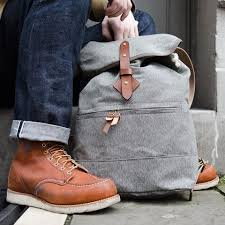
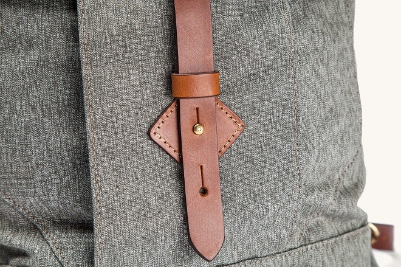
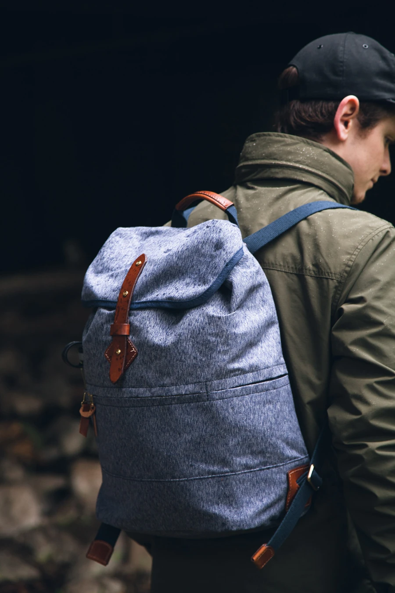
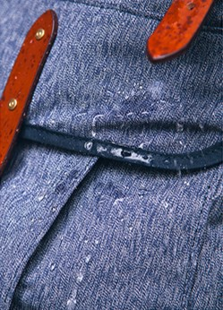

TANNER COLLECTIONS


01
NOMAD DUFFLE
This bag can be carried by hand, worn as backpack or slung over a shulder depending on your traveling needs.
Read more >02
SPRUCE SALT & PEPPER
We designed or Nomad Duffle as versitile yet rugged piece of luggage that's just as comfotable outdoors as it is in an overhead compartment
Read more >


03
FIELD CAMERA BAG
Our field camera bag is constructed from 140z Salt & Pepper Canvas and Cambara Meridian English Bridle Leather. We've put these bags through the ringer in testing and we think you'll approve of the result. Our camera bag is fully lined and padded, and features and adjustable shoulder strap.
Read more >